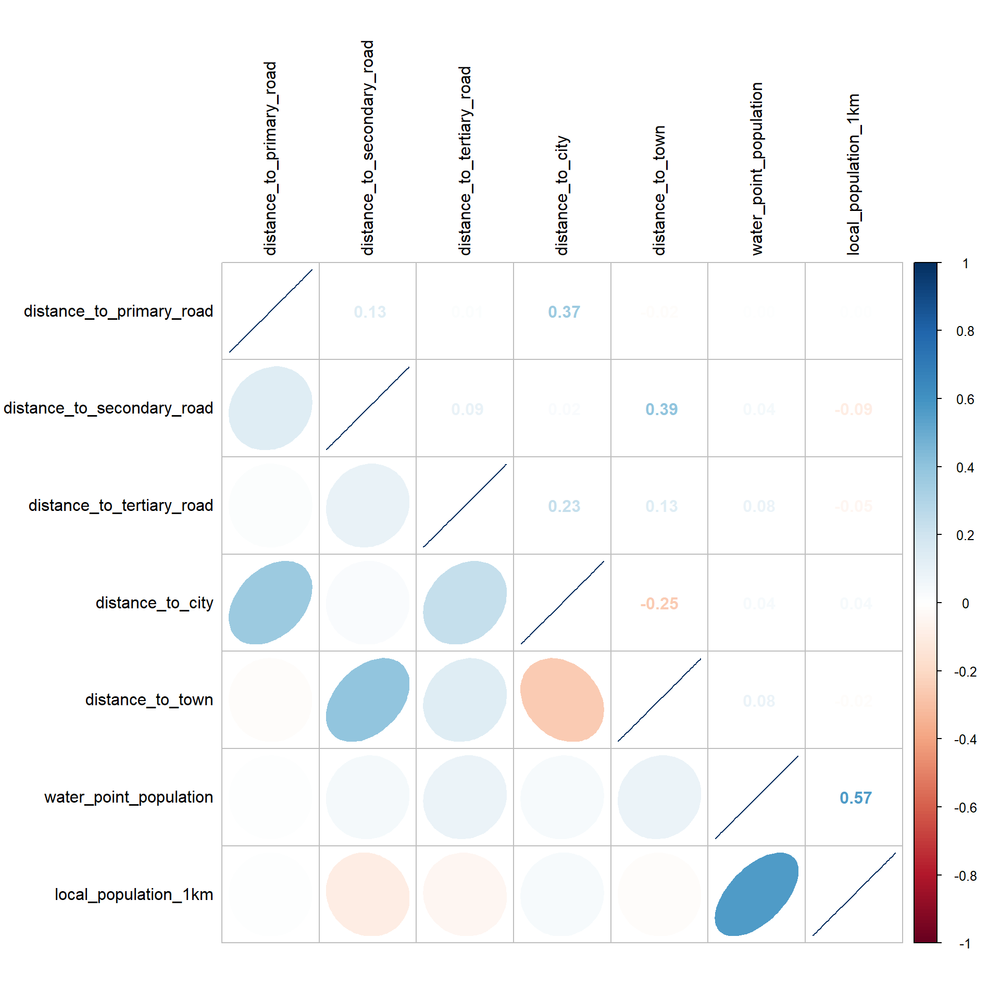

pacman::p_load(sf, tidyverse, funModeling, blorr, corrplot, ggpubr, spdep, GWmodel, tmap, skimr, caret)In-class Exercise 5
Overview
In this hands-on exercise, I learned how to build hedonic pricing models by using GWR methods. The dependent variable is the resale prices of condominium in 2015. The independent variables are divided into either structural and locational.
Getting Started
Firstly, we need to install the required R packages.
olsrr: building ordinary least squares regression models
GWmodel: building geographically weighted regression models
corrplot: plotting the graph of the correlation matrix
sf: importing, managing and processing geospatial data.
tmap: plotting Thematic Maps.
tidyverse: importing, wrangling and visualizing data. It consists of a family of R packages, including readr, readxl, tidyr, dplyr and ggplot2.
Importing Required Data
Importing the analytical data table
Let’s import the analytical data table Osun.
Osun <- read_rds("data/Osun.rds")
Osun_wp_sf <- read_rds("data/Osun_wp_sf.rds")Osun is a polygon feature data frame with 30 features and 5 fields.
Osun_wp_sf contains the water point information in Osun state, and it has 4760 observations and 75 variables.
In this exercise, we’ll calibrate a logistic regression model using status as the response variable.
Next, let’s check the split of the response variable.
Osun_wp_sf %>%
freq(input = 'status')Warning: `guides(<scale> = FALSE)` is deprecated. Please use `guides(<scale> =
"none")` instead.
status frequency percentage cumulative_perc
1 TRUE 2642 55.5 55.5
2 FALSE 2118 44.5 100.0The plot above shows that the response variable is quite balanced.
Let’s plot the status distribution on a choropleth map.
Exploratory Data Analysis (EDA)
Next, we’ll check the summary statistics of the variables in the water point data frame.
Osun_wp_sf %>%
skim()Warning: Couldn't find skimmers for class: sfc_POINT, sfc; No user-defined `sfl`
provided. Falling back to `character`.| Name | Piped data |
| Number of rows | 4760 |
| Number of columns | 75 |
| _______________________ | |
| Column type frequency: | |
| character | 47 |
| logical | 5 |
| numeric | 23 |
| ________________________ | |
| Group variables | None |
Variable type: character
| skim_variable | n_missing | complete_rate | min | max | empty | n_unique | whitespace |
|---|---|---|---|---|---|---|---|
| source | 0 | 1.00 | 5 | 44 | 0 | 2 | 0 |
| report_date | 0 | 1.00 | 22 | 22 | 0 | 42 | 0 |
| status_id | 0 | 1.00 | 2 | 7 | 0 | 3 | 0 |
| water_source_clean | 0 | 1.00 | 8 | 22 | 0 | 3 | 0 |
| water_source_category | 0 | 1.00 | 4 | 6 | 0 | 2 | 0 |
| water_tech_clean | 24 | 0.99 | 9 | 23 | 0 | 3 | 0 |
| water_tech_category | 24 | 0.99 | 9 | 15 | 0 | 2 | 0 |
| facility_type | 0 | 1.00 | 8 | 8 | 0 | 1 | 0 |
| clean_country_name | 0 | 1.00 | 7 | 7 | 0 | 1 | 0 |
| clean_adm1 | 0 | 1.00 | 3 | 5 | 0 | 5 | 0 |
| clean_adm2 | 0 | 1.00 | 3 | 14 | 0 | 35 | 0 |
| clean_adm3 | 4760 | 0.00 | NA | NA | 0 | 0 | 0 |
| clean_adm4 | 4760 | 0.00 | NA | NA | 0 | 0 | 0 |
| installer | 4760 | 0.00 | NA | NA | 0 | 0 | 0 |
| management_clean | 1573 | 0.67 | 5 | 37 | 0 | 7 | 0 |
| status_clean | 0 | 1.00 | 9 | 32 | 0 | 7 | 0 |
| pay | 0 | 1.00 | 2 | 39 | 0 | 7 | 0 |
| fecal_coliform_presence | 4760 | 0.00 | NA | NA | 0 | 0 | 0 |
| subjective_quality | 0 | 1.00 | 18 | 20 | 0 | 4 | 0 |
| activity_id | 4757 | 0.00 | 36 | 36 | 0 | 3 | 0 |
| scheme_id | 4760 | 0.00 | NA | NA | 0 | 0 | 0 |
| wpdx_id | 0 | 1.00 | 12 | 12 | 0 | 4760 | 0 |
| notes | 0 | 1.00 | 2 | 96 | 0 | 3502 | 0 |
| orig_lnk | 4757 | 0.00 | 84 | 84 | 0 | 1 | 0 |
| photo_lnk | 41 | 0.99 | 84 | 84 | 0 | 4719 | 0 |
| country_id | 0 | 1.00 | 2 | 2 | 0 | 1 | 0 |
| data_lnk | 0 | 1.00 | 79 | 96 | 0 | 2 | 0 |
| water_point_history | 0 | 1.00 | 142 | 834 | 0 | 4750 | 0 |
| clean_country_id | 0 | 1.00 | 3 | 3 | 0 | 1 | 0 |
| country_name | 0 | 1.00 | 7 | 7 | 0 | 1 | 0 |
| water_source | 0 | 1.00 | 8 | 30 | 0 | 4 | 0 |
| water_tech | 0 | 1.00 | 5 | 37 | 0 | 20 | 0 |
| adm2 | 0 | 1.00 | 3 | 14 | 0 | 33 | 0 |
| adm3 | 4760 | 0.00 | NA | NA | 0 | 0 | 0 |
| management | 1573 | 0.67 | 5 | 47 | 0 | 7 | 0 |
| adm1 | 0 | 1.00 | 4 | 5 | 0 | 4 | 0 |
| New Georeferenced Column | 0 | 1.00 | 16 | 35 | 0 | 4760 | 0 |
| lat_lon_deg | 0 | 1.00 | 13 | 32 | 0 | 4760 | 0 |
| public_data_source | 0 | 1.00 | 84 | 102 | 0 | 2 | 0 |
| converted | 0 | 1.00 | 53 | 53 | 0 | 1 | 0 |
| created_timestamp | 0 | 1.00 | 22 | 22 | 0 | 2 | 0 |
| updated_timestamp | 0 | 1.00 | 22 | 22 | 0 | 2 | 0 |
| Geometry | 0 | 1.00 | 33 | 37 | 0 | 4760 | 0 |
| ADM2_EN | 0 | 1.00 | 3 | 14 | 0 | 30 | 0 |
| ADM2_PCODE | 0 | 1.00 | 8 | 8 | 0 | 30 | 0 |
| ADM1_EN | 0 | 1.00 | 4 | 4 | 0 | 1 | 0 |
| ADM1_PCODE | 0 | 1.00 | 5 | 5 | 0 | 1 | 0 |
Variable type: logical
| skim_variable | n_missing | complete_rate | mean | count |
|---|---|---|---|---|
| rehab_year | 4760 | 0 | NaN | : |
| rehabilitator | 4760 | 0 | NaN | : |
| is_urban | 0 | 1 | 0.39 | FAL: 2884, TRU: 1876 |
| latest_record | 0 | 1 | 1.00 | TRU: 4760 |
| status | 0 | 1 | 0.56 | TRU: 2642, FAL: 2118 |
Variable type: numeric
| skim_variable | n_missing | complete_rate | mean | sd | p0 | p25 | p50 | p75 | p100 | hist |
|---|---|---|---|---|---|---|---|---|---|---|
| row_id | 0 | 1.00 | 68550.48 | 10216.94 | 49601.00 | 66874.75 | 68244.50 | 69562.25 | 471319.00 | ▇▁▁▁▁ |
| lat_deg | 0 | 1.00 | 7.68 | 0.22 | 7.06 | 7.51 | 7.71 | 7.88 | 8.06 | ▁▂▇▇▇ |
| lon_deg | 0 | 1.00 | 4.54 | 0.21 | 4.08 | 4.36 | 4.56 | 4.71 | 5.06 | ▃▆▇▇▂ |
| install_year | 1144 | 0.76 | 2008.63 | 6.04 | 1917.00 | 2006.00 | 2010.00 | 2013.00 | 2015.00 | ▁▁▁▁▇ |
| fecal_coliform_value | 4760 | 0.00 | NaN | NA | NA | NA | NA | NA | NA | |
| distance_to_primary_road | 0 | 1.00 | 5021.53 | 5648.34 | 0.01 | 719.36 | 2972.78 | 7314.73 | 26909.86 | ▇▂▁▁▁ |
| distance_to_secondary_road | 0 | 1.00 | 3750.47 | 3938.63 | 0.15 | 460.90 | 2554.25 | 5791.94 | 19559.48 | ▇▃▁▁▁ |
| distance_to_tertiary_road | 0 | 1.00 | 1259.28 | 1680.04 | 0.02 | 121.25 | 521.77 | 1834.42 | 10966.27 | ▇▂▁▁▁ |
| distance_to_city | 0 | 1.00 | 16663.99 | 10960.82 | 53.05 | 7930.75 | 15030.41 | 24255.75 | 47934.34 | ▇▇▆▃▁ |
| distance_to_town | 0 | 1.00 | 16726.59 | 12452.65 | 30.00 | 6876.92 | 12204.53 | 27739.46 | 44020.64 | ▇▅▃▃▂ |
| rehab_priority | 2654 | 0.44 | 489.33 | 1658.81 | 0.00 | 7.00 | 91.50 | 376.25 | 29697.00 | ▇▁▁▁▁ |
| water_point_population | 4 | 1.00 | 513.58 | 1458.92 | 0.00 | 14.00 | 119.00 | 433.25 | 29697.00 | ▇▁▁▁▁ |
| local_population_1km | 4 | 1.00 | 2727.16 | 4189.46 | 0.00 | 176.00 | 1032.00 | 3717.00 | 36118.00 | ▇▁▁▁▁ |
| crucialness_score | 798 | 0.83 | 0.26 | 0.28 | 0.00 | 0.07 | 0.15 | 0.35 | 1.00 | ▇▃▁▁▁ |
| pressure_score | 798 | 0.83 | 1.46 | 4.16 | 0.00 | 0.12 | 0.41 | 1.24 | 93.69 | ▇▁▁▁▁ |
| usage_capacity | 0 | 1.00 | 560.74 | 338.46 | 300.00 | 300.00 | 300.00 | 1000.00 | 1000.00 | ▇▁▁▁▅ |
| days_since_report | 0 | 1.00 | 2692.69 | 41.92 | 1483.00 | 2688.00 | 2693.00 | 2700.00 | 4645.00 | ▁▇▁▁▁ |
| staleness_score | 0 | 1.00 | 42.80 | 0.58 | 23.13 | 42.70 | 42.79 | 42.86 | 62.66 | ▁▁▇▁▁ |
| location_id | 0 | 1.00 | 235865.49 | 6657.60 | 23741.00 | 230638.75 | 236199.50 | 240061.25 | 267454.00 | ▁▁▁▁▇ |
| cluster_size | 0 | 1.00 | 1.05 | 0.25 | 1.00 | 1.00 | 1.00 | 1.00 | 4.00 | ▇▁▁▁▁ |
| lat_deg_original | 4760 | 0.00 | NaN | NA | NA | NA | NA | NA | NA | |
| lon_deg_original | 4760 | 0.00 | NaN | NA | NA | NA | NA | NA | NA | |
| count | 0 | 1.00 | 1.00 | 0.00 | 1.00 | 1.00 | 1.00 | 1.00 | 1.00 | ▁▁▇▁▁ |
The summary report above reveals that there are missing values in some of the variables. Since logistic regression requires the variables to be complete (i.e., no missing values), we’ll not consider the variables with exessive missing values in calibrating the model in this exercise.
However, there are a few variables with little missing values. In order not to lose much information, we’ll keep them but exclude the observations with the missing values. In addition, we’ll convert usage_capacity from numerical type to factor type because it only has two values (i.e., 300 and 1000).
Osun_wp_sf_clean <- Osun_wp_sf %>%
filter_at(vars(status,
distance_to_primary_road,
distance_to_secondary_road,
distance_to_tertiary_road,
distance_to_city,
distance_to_town,
water_point_population,
local_population_1km,
usage_capacity,
is_urban,
water_source_clean),
all_vars(!is.na(.))) %>%
mutate(usage_capacity = as.factor(usage_capacity))Correlation Analysis
Before performing the correlation analysis, we’ll extract the interested variables into a new data frame.
Osun_wp <- Osun_wp_sf_clean %>%
select(c(7, 35:39, 42:43, 46:47, 57)) %>%
st_set_geometry(NULL)Next, we’ll construct the correlation matrix.
cluster_vars.cor = cor(
Osun_wp[, 2:8]
)
corrplot.mixed(cluster_vars.cor,
lower = "ellipse",
upper = "number",
tl.pos = "lt",
diag = "l",
tl.col = "black")
Great! We don’t have variables that are strongly correlated. We could now proceed to calibrate our model.
Logistic Regression Model
Now, we’ll build a logistic regression model.
model <- glm(status ~ distance_to_primary_road +
distance_to_secondary_road +
distance_to_tertiary_road +
distance_to_city +
distance_to_town +
water_point_population +
local_population_1km +
usage_capacity +
is_urban +
water_source_clean,
data = Osun_wp_sf_clean,
family = binomial(link = "logit"))Instead of using the default R model output, we’ll another function to generate a better model report.
blr_regress(model) Model Overview
------------------------------------------------------------------------
Data Set Resp Var Obs. Df. Model Df. Residual Convergence
------------------------------------------------------------------------
data status 4756 4755 4744 TRUE
------------------------------------------------------------------------
Response Summary
--------------------------------------------------------
Outcome Frequency Outcome Frequency
--------------------------------------------------------
0 2114 1 2642
--------------------------------------------------------
Maximum Likelihood Estimates
-----------------------------------------------------------------------------------------------
Parameter DF Estimate Std. Error z value Pr(>|z|)
-----------------------------------------------------------------------------------------------
(Intercept) 1 0.3887 0.1124 3.4588 5e-04
distance_to_primary_road 1 0.0000 0.0000 -0.7153 0.4744
distance_to_secondary_road 1 0.0000 0.0000 -0.5530 0.5802
distance_to_tertiary_road 1 1e-04 0.0000 4.6708 0.0000
distance_to_city 1 0.0000 0.0000 -4.7574 0.0000
distance_to_town 1 0.0000 0.0000 -4.9170 0.0000
water_point_population 1 -5e-04 0.0000 -11.3686 0.0000
local_population_1km 1 3e-04 0.0000 19.2953 0.0000
usage_capacity1000 1 -0.6230 0.0697 -8.9366 0.0000
is_urbanTRUE 1 -0.2971 0.0819 -3.6294 3e-04
water_source_cleanProtected Shallow Well 1 0.5040 0.0857 5.8783 0.0000
water_source_cleanProtected Spring 1 1.2882 0.4388 2.9359 0.0033
-----------------------------------------------------------------------------------------------
Association of Predicted Probabilities and Observed Responses
---------------------------------------------------------------
% Concordant 0.7347 Somers' D 0.4693
% Discordant 0.2653 Gamma 0.4693
% Tied 0.0000 Tau-a 0.2318
Pairs 5585188 c 0.7347
---------------------------------------------------------------The model report above reveals that there are varaibles having p-values less than 0.05. Hence, we should exclude them in the model.
Variables to be excluded:
- distance_to_primary_road
- distance_to_secondary_road
Next, we’ll construct a confusion matrix using 0.5 as the cutoff probability.
blr_confusion_matrix(model, cutoff = 0.5)Confusion Matrix and Statistics
Reference
Prediction FALSE TRUE
0 1301 738
1 813 1904
Accuracy : 0.6739
No Information Rate : 0.4445
Kappa : 0.3373
McNemars's Test P-Value : 0.0602
Sensitivity : 0.7207
Specificity : 0.6154
Pos Pred Value : 0.7008
Neg Pred Value : 0.6381
Prevalence : 0.5555
Detection Rate : 0.4003
Detection Prevalence : 0.5713
Balanced Accuracy : 0.6680
Precision : 0.7008
Recall : 0.7207
'Positive' Class : 1The summary report above reveals that the model has an accuracy of 67.39%.
Geographically Weighted Regression Model
First of all, we need to convert the polygon feature data frame into a SpatialPointsDataFrame in order to build a GWR model.
Osun_wp_sp <- Osun_wp_sf_clean %>%
select(c(status,
distance_to_primary_road,
distance_to_secondary_road,
distance_to_tertiary_road,
distance_to_city,
distance_to_town,
water_point_population,
local_population_1km,
usage_capacity,
is_urban,
water_source_clean)) %>%
as_Spatial()
Osun_wp_spclass : SpatialPointsDataFrame
features : 4756
extent : 182502.4, 290751, 340054.1, 450905.3 (xmin, xmax, ymin, ymax)
crs : +proj=tmerc +lat_0=4 +lon_0=8.5 +k=0.99975 +x_0=670553.98 +y_0=0 +a=6378249.145 +rf=293.465 +towgs84=-92,-93,122,0,0,0,0 +units=m +no_defs
variables : 11
names : status, distance_to_primary_road, distance_to_secondary_road, distance_to_tertiary_road, distance_to_city, distance_to_town, water_point_population, local_population_1km, usage_capacity, is_urban, water_source_clean
min values : 0, 0.014461356813335, 0.152195902540837, 0.017815121653488, 53.0461399623541, 30.0019777713073, 0, 0, 1000, 0, Borehole
max values : 1, 26909.8616132094, 19559.4793799085, 10966.2705628969, 47934.343603562, 44020.6393368124, 29697, 36118, 300, 1, Protected Spring Next, we’ll calculate the distance matrix using fixed distance method.
bw.fixed <- bw.ggwr(status ~ distance_to_primary_road +
distance_to_secondary_road +
distance_to_tertiary_road +
distance_to_city +
distance_to_town +
water_point_population +
local_population_1km +
usage_capacity +
is_urban +
water_source_clean,
data = Osun_wp_sp,
family = "binomial",
approach = "AIC",
kernel = "gaussian",
adaptive = FALSE,
longlat = FALSE)Take a cup of tea and have a break, it will take a few minutes.
-----A kind suggestion from GWmodel development group
Iteration Log-Likelihood:(With bandwidth: 95768.67 )
=========================
0 -2889
1 -2836
2 -2830
3 -2829
4 -2829
5 -2829
Fixed bandwidth: 95768.67 AICc value: 5684.357
Iteration Log-Likelihood:(With bandwidth: 59200.13 )
=========================
0 -2875
1 -2818
2 -2810
3 -2808
4 -2808
5 -2808
Fixed bandwidth: 59200.13 AICc value: 5646.785
Iteration Log-Likelihood:(With bandwidth: 36599.53 )
=========================
0 -2847
1 -2781
2 -2768
3 -2765
4 -2765
5 -2765
6 -2765
Fixed bandwidth: 36599.53 AICc value: 5575.148
Iteration Log-Likelihood:(With bandwidth: 22631.59 )
=========================
0 -2798
1 -2719
2 -2698
3 -2693
4 -2693
5 -2693
6 -2693
Fixed bandwidth: 22631.59 AICc value: 5466.883
Iteration Log-Likelihood:(With bandwidth: 13998.93 )
=========================
0 -2720
1 -2622
2 -2590
3 -2581
4 -2580
5 -2580
6 -2580
7 -2580
Fixed bandwidth: 13998.93 AICc value: 5324.578
Iteration Log-Likelihood:(With bandwidth: 8663.649 )
=========================
0 -2601
1 -2476
2 -2431
3 -2419
4 -2417
5 -2417
6 -2417
7 -2417
Fixed bandwidth: 8663.649 AICc value: 5163.61
Iteration Log-Likelihood:(With bandwidth: 5366.266 )
=========================
0 -2436
1 -2268
2 -2194
3 -2167
4 -2161
5 -2161
6 -2161
7 -2161
8 -2161
9 -2161
Fixed bandwidth: 5366.266 AICc value: 4990.587
Iteration Log-Likelihood:(With bandwidth: 3328.371 )
=========================
0 -2157
1 -1922
2 -1802
3 -1739
4 -1713
5 -1713
Fixed bandwidth: 3328.371 AICc value: 4798.288
Iteration Log-Likelihood:(With bandwidth: 2068.882 )
=========================
0 -1751
1 -1421
2 -1238
3 -1133
4 -1084
5 -1084
Fixed bandwidth: 2068.882 AICc value: 4837.017
Iteration Log-Likelihood:(With bandwidth: 4106.777 )
=========================
0 -2297
1 -2095
2 -1997
3 -1951
4 -1938
5 -1936
6 -1936
7 -1936
8 -1936
Fixed bandwidth: 4106.777 AICc value: 4873.161
Iteration Log-Likelihood:(With bandwidth: 2847.289 )
=========================
0 -2036
1 -1771
2 -1633
3 -1558
4 -1525
5 -1525
Fixed bandwidth: 2847.289 AICc value: 4768.192
Iteration Log-Likelihood:(With bandwidth: 2549.964 )
=========================
0 -1941
1 -1655
2 -1503
3 -1417
4 -1378
5 -1378
Fixed bandwidth: 2549.964 AICc value: 4762.212
Iteration Log-Likelihood:(With bandwidth: 2366.207 )
=========================
0 -1874
1 -1573
2 -1410
3 -1316
4 -1274
5 -1274
Fixed bandwidth: 2366.207 AICc value: 4773.081
Iteration Log-Likelihood:(With bandwidth: 2663.532 )
=========================
0 -1979
1 -1702
2 -1555
3 -1474
4 -1438
5 -1438
Fixed bandwidth: 2663.532 AICc value: 4762.568
Iteration Log-Likelihood:(With bandwidth: 2479.775 )
=========================
0 -1917
1 -1625
2 -1468
3 -1380
4 -1339
5 -1339
Fixed bandwidth: 2479.775 AICc value: 4764.294
Iteration Log-Likelihood:(With bandwidth: 2593.343 )
=========================
0 -1956
1 -1674
2 -1523
3 -1439
4 -1401
5 -1401
Fixed bandwidth: 2593.343 AICc value: 4761.813
Iteration Log-Likelihood:(With bandwidth: 2620.153 )
=========================
0 -1965
1 -1685
2 -1536
3 -1453
4 -1415
5 -1415
Fixed bandwidth: 2620.153 AICc value: 4761.89
Iteration Log-Likelihood:(With bandwidth: 2576.774 )
=========================
0 -1950
1 -1667
2 -1515
3 -1431
4 -1393
5 -1393
Fixed bandwidth: 2576.774 AICc value: 4761.889
Iteration Log-Likelihood:(With bandwidth: 2603.584 )
=========================
0 -1960
1 -1678
2 -1528
3 -1445
4 -1407
5 -1407
Fixed bandwidth: 2603.584 AICc value: 4761.813
Iteration Log-Likelihood:(With bandwidth: 2609.913 )
=========================
0 -1962
1 -1680
2 -1531
3 -1448
4 -1410
5 -1410
Fixed bandwidth: 2609.913 AICc value: 4761.831
Iteration Log-Likelihood:(With bandwidth: 2599.672 )
=========================
0 -1958
1 -1676
2 -1526
3 -1443
4 -1405
5 -1405
Fixed bandwidth: 2599.672 AICc value: 4761.809
Iteration Log-Likelihood:(With bandwidth: 2597.255 )
=========================
0 -1957
1 -1675
2 -1525
3 -1441
4 -1403
5 -1403
Fixed bandwidth: 2597.255 AICc value: 4761.809 The longlat argument is set to FALSE because we have already converted the longitude and latiutde are already in the projected coordinate system.
bw.fixed[1] 2599.672The fixed band width is xxx meters. The unit is meter because our projected coordinate system is in meters.
Next, we can calibrate the GWR model with the selected band width.
gwlr.fixed <- ggwr.basic(status ~ distance_to_primary_road +
distance_to_secondary_road +
distance_to_tertiary_road +
distance_to_city +
distance_to_town +
water_point_population +
local_population_1km +
usage_capacity +
is_urban +
water_source_clean,
data = Osun_wp_sp,
bw = bw.fixed,
family = "binomial",
kernel = "gaussian",
adaptive = FALSE,
longlat = FALSE) Iteration Log-Likelihood
=========================
0 -1958
1 -1676
2 -1526
3 -1443
4 -1405
5 -1405 gwlr.fixed ***********************************************************************
* Package GWmodel *
***********************************************************************
Program starts at: 2022-12-18 00:06:02
Call:
ggwr.basic(formula = status ~ distance_to_primary_road + distance_to_secondary_road +
distance_to_tertiary_road + distance_to_city + distance_to_town +
water_point_population + local_population_1km + usage_capacity +
is_urban + water_source_clean, data = Osun_wp_sp, bw = bw.fixed,
family = "binomial", kernel = "gaussian", adaptive = FALSE,
longlat = FALSE)
Dependent (y) variable: status
Independent variables: distance_to_primary_road distance_to_secondary_road distance_to_tertiary_road distance_to_city distance_to_town water_point_population local_population_1km usage_capacity is_urban water_source_clean
Number of data points: 4756
Used family: binomial
***********************************************************************
* Results of Generalized linear Regression *
***********************************************************************
Call:
NULL
Deviance Residuals:
Min 1Q Median 3Q Max
-124.555 -1.755 1.072 1.742 34.333
Coefficients:
Estimate Std. Error z value Pr(>|z|)
Intercept 3.887e-01 1.124e-01 3.459 0.000543
distance_to_primary_road -4.642e-06 6.490e-06 -0.715 0.474422
distance_to_secondary_road -5.143e-06 9.299e-06 -0.553 0.580230
distance_to_tertiary_road 9.683e-05 2.073e-05 4.671 3.00e-06
distance_to_city -1.686e-05 3.544e-06 -4.757 1.96e-06
distance_to_town -1.480e-05 3.009e-06 -4.917 8.79e-07
water_point_population -5.097e-04 4.484e-05 -11.369 < 2e-16
local_population_1km 3.451e-04 1.788e-05 19.295 < 2e-16
usage_capacity1000 -6.230e-01 6.972e-02 -8.937 < 2e-16
is_urbanTRUE -2.971e-01 8.185e-02 -3.629 0.000284
water_source_cleanProtected Shallow Well 5.040e-01 8.574e-02 5.878 4.14e-09
water_source_cleanProtected Spring 1.288e+00 4.388e-01 2.936 0.003325
Intercept ***
distance_to_primary_road
distance_to_secondary_road
distance_to_tertiary_road ***
distance_to_city ***
distance_to_town ***
water_point_population ***
local_population_1km ***
usage_capacity1000 ***
is_urbanTRUE ***
water_source_cleanProtected Shallow Well ***
water_source_cleanProtected Spring **
---
Signif. codes: 0 '***' 0.001 '**' 0.01 '*' 0.05 '.' 0.1 ' ' 1
(Dispersion parameter for binomial family taken to be 1)
Null deviance: 6534.5 on 4755 degrees of freedom
Residual deviance: 5688.0 on 4744 degrees of freedom
AIC: 5712
Number of Fisher Scoring iterations: 5
AICc: 5712.099
Pseudo R-square value: 0.1295351
***********************************************************************
* Results of Geographically Weighted Regression *
***********************************************************************
*********************Model calibration information*********************
Kernel function: gaussian
Fixed bandwidth: 2599.672
Regression points: the same locations as observations are used.
Distance metric: A distance matrix is specified for this model calibration.
************Summary of Generalized GWR coefficient estimates:**********
Min. 1st Qu. Median
Intercept -8.7228e+02 -4.9955e+00 1.7600e+00
distance_to_primary_road -1.9389e-02 -4.8031e-04 2.9618e-05
distance_to_secondary_road -1.5921e-02 -3.7551e-04 1.2317e-04
distance_to_tertiary_road -1.5618e-02 -4.2368e-04 7.6179e-05
distance_to_city -1.8416e-02 -5.6217e-04 -1.2726e-04
distance_to_town -2.2411e-02 -5.7283e-04 -1.5155e-04
water_point_population -5.2208e-02 -2.2767e-03 -9.8875e-04
local_population_1km -1.2698e-01 4.9952e-04 1.0638e-03
usage_capacity1000 -2.0772e+01 -9.7231e-01 -4.1592e-01
is_urbanTRUE -1.9790e+02 -4.2908e+00 -1.6864e+00
water_source_cleanProtected.Shallow.Well -2.0789e+01 -4.5190e-01 5.3340e-01
water_source_cleanProtected.Spring -5.2235e+02 -5.5977e+00 2.5441e+00
3rd Qu. Max.
Intercept 1.2763e+01 1073.2154
distance_to_primary_road 4.8443e-04 0.0142
distance_to_secondary_road 6.0692e-04 0.0258
distance_to_tertiary_road 6.6814e-04 0.0128
distance_to_city 2.3718e-04 0.0150
distance_to_town 1.9271e-04 0.0224
water_point_population 5.0102e-04 0.1309
local_population_1km 1.8157e-03 0.0392
usage_capacity1000 3.0322e-01 5.9281
is_urbanTRUE 1.2841e+00 744.3097
water_source_cleanProtected.Shallow.Well 1.7849e+00 67.6343
water_source_cleanProtected.Spring 6.7663e+00 317.4123
************************Diagnostic information*************************
Number of data points: 4756
GW Deviance: 2795.084
AIC : 4414.606
AICc : 4747.423
Pseudo R-square value: 0.5722559
***********************************************************************
Program stops at: 2022-12-18 00:06:44 The model report above shows that the GW model has a significantly lower AIC compared to the normal logistic regression model.
Next, we’ll compute the prediction of functional and non-functional from the estimated probability using 0.5 as the cutoff point.
gwr.fixed <- as.data.frame(gwlr.fixed$SDF)gwr.fixed <- gwr.fixed %>%
mutate(most = ifelse(
gwr.fixed$yhat >= 0.5, T, F
))gwr.fixed$y <- as.factor(gwr.fixed$y)
gwr.fixed$most <- as.factor(gwr.fixed$most)
#CM <- confusionMatrix(data = gwr.fixed$most, reference = gwr.fixed$y)